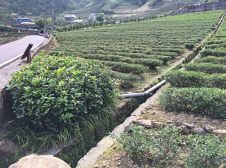
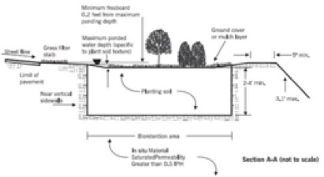
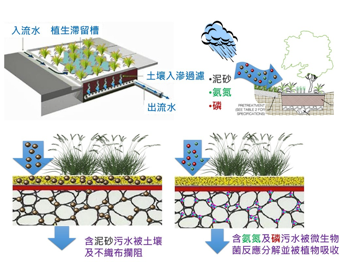

植生滯留槽
LID設施種類繁多，其中植生滯留槽(bioretention cell)又稱之為雨花園(rain garden) ，是一種結合物理性、化學性與生物性過濾的暴雨逕流收集與污染削減之LID設施。
傳統對植生滯留槽的看法，以小面積、小區塊形式設計為小型貯留設施，常見於停車、道路分隔島或易積水之區域，主要功效為衰減或處理暴雨逕流量，兼具美化環境之功效。
植生滯留槽
植生滯留槽並非只有貯留功能，其亦具有過濾淨化水質的功效，茶園產生逕流時，逕流水可以直接流入植生滯留槽中貯留並降低尖峰流量，而茶園逕流水中皆附有許多污染物，當逕流水進入植生滯留槽過濾設施後，設施內部之材料亦會對水體中污染物進行削減、降低水中污染濃度。
植生滯留槽
植生滯留槽優點
1.過濾、淨化水質
2.衰減或處理暴雨逕流量
3.儲存、降低尖峰流量
4.設施內部材料對水體中汙染進行削減、降低汙染濃度
5.美化當地環境
